Every row is the same pad (Comeback City bridge-climb, telemetry routeProgress
0.435) at full race speed on lap 2+. Column 1 = FAR (~120 world units — your reaction distance
at top speed; this is the shot that matters), column 2 = NEAR (~36 wu, commit distance),
column 3 = ON the pad. V0 is today's shipped look. The far column is the test: today's flat
pad vanishes at distance no matter the color — height is what survives the low camera angle.
Pick a number or name a blend (e.g. "V2 slab with V1's amber"). Force looks in-game with
?boostLab=1 + window.__boostLabOverrides={variant:'v1'}; shipped
default is unchanged until a pick lands.
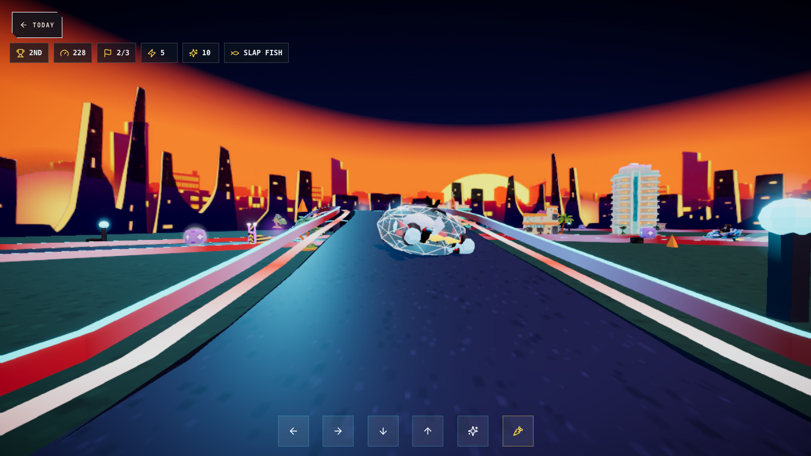
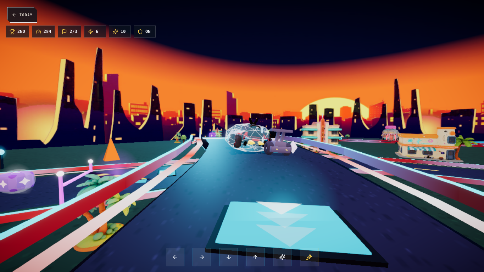
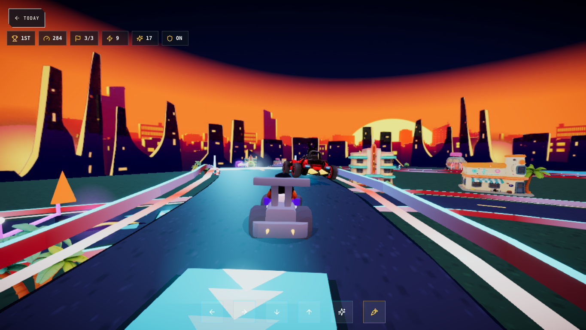
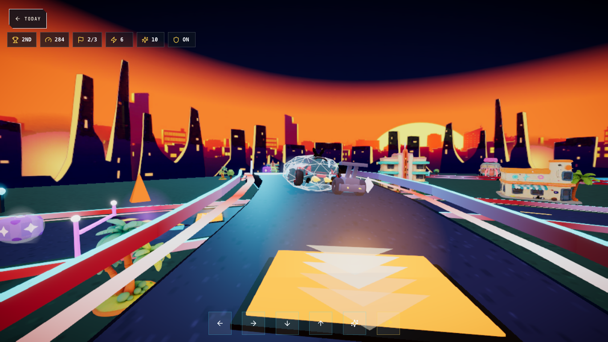
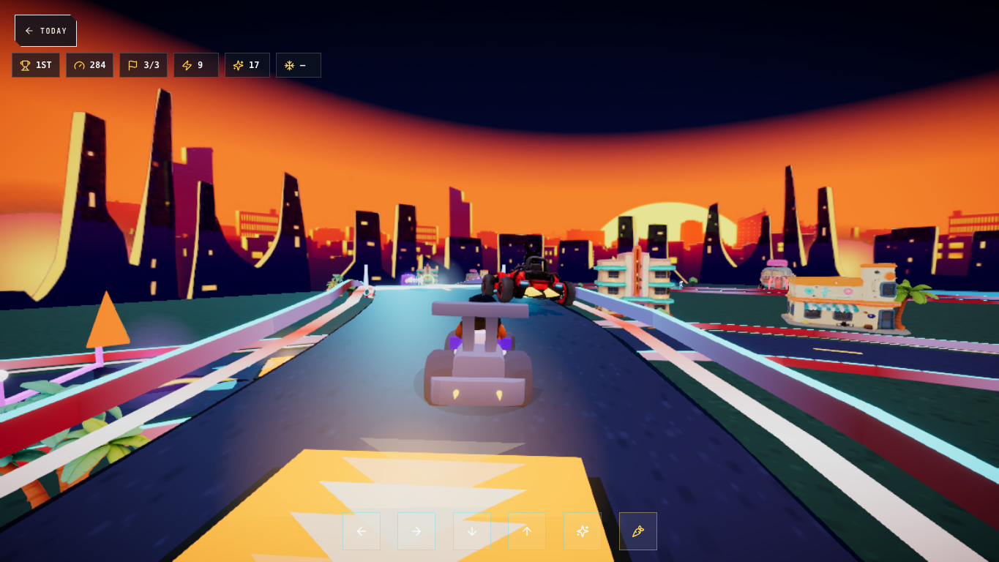
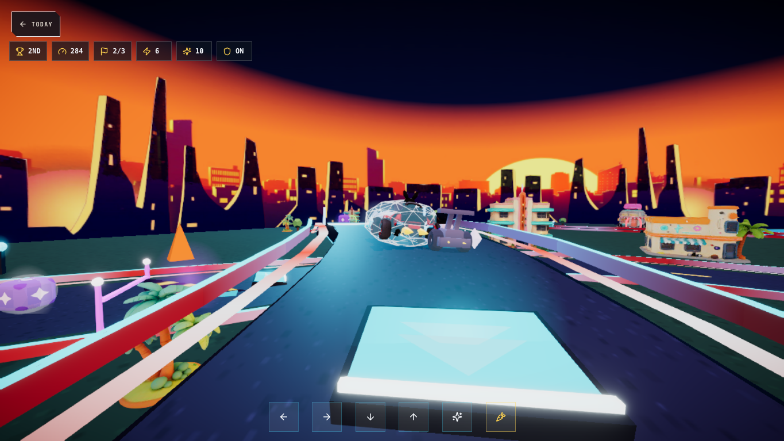
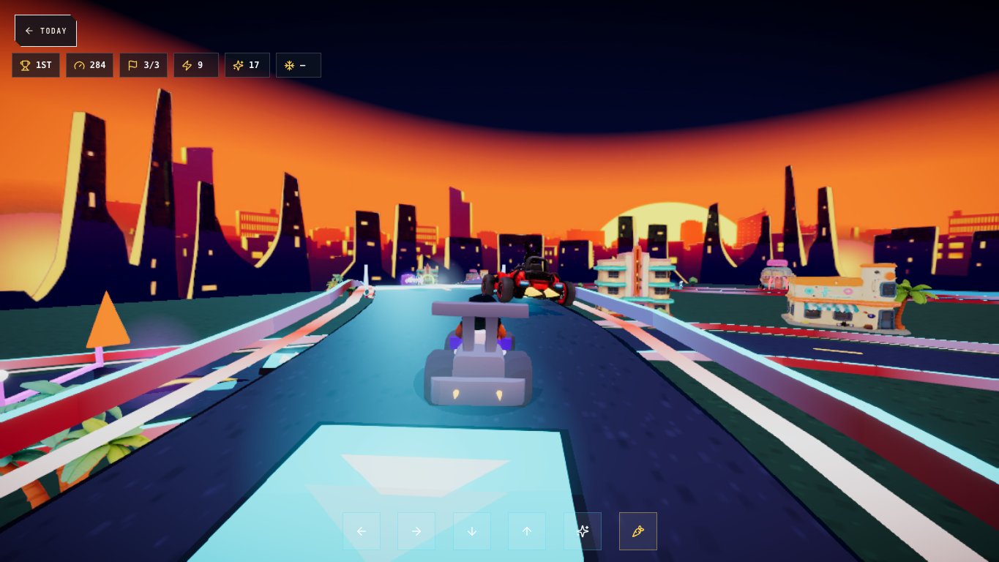
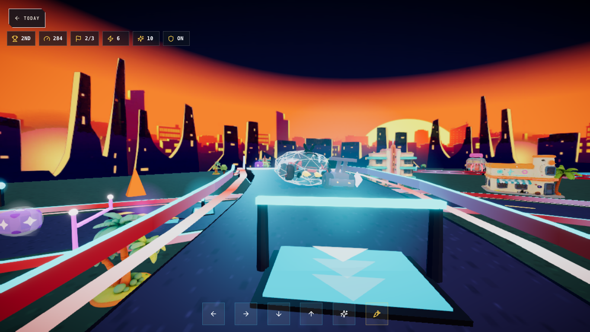
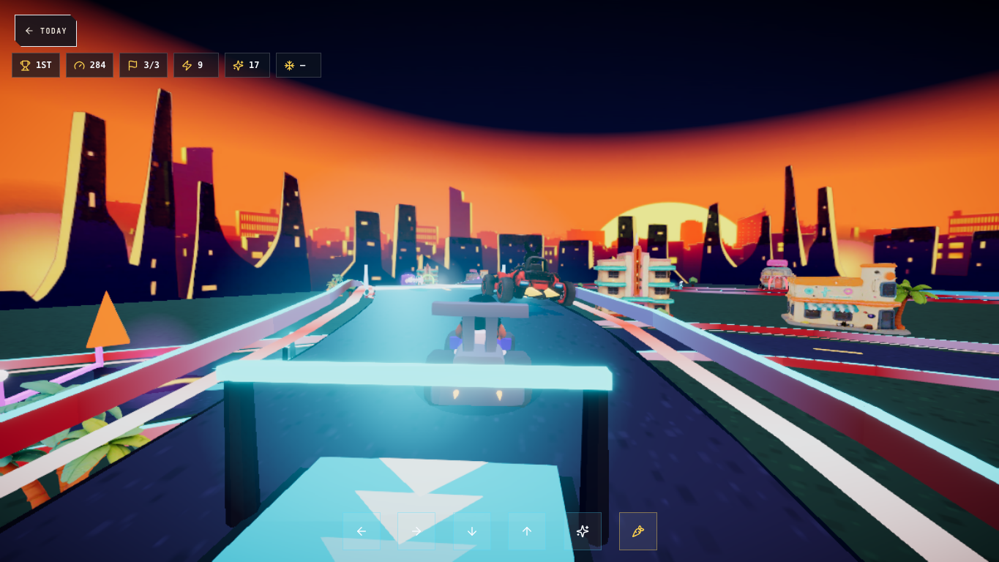
Note for the pick: these are procedural stand-ins to settle the DIRECTION — the winning treatment gets the generated-3D render pass in W5 (pad ramps/arrows with the Miami-grade asset quality), so judge shape/height/color, not surface polish.
Owner 2026-07-07: "im worried about seeing it better on the approach so you can hit
them — how can we fix that even if small camera adjustments." Every tile below is the SAME far
moment (reaction distance, lap 2+, full speed). Rows = camera candidates (all small: eye height
and/or look-ahead only — the kart stays framed); columns = today's flat pad vs the V3 light gate.
Force a camera in-game with ?camLab=1 +
window.__camLabOverrides={height:12.5, lookAhead:40, lookUp:5}. Nothing ships until
you name a row + column combo.
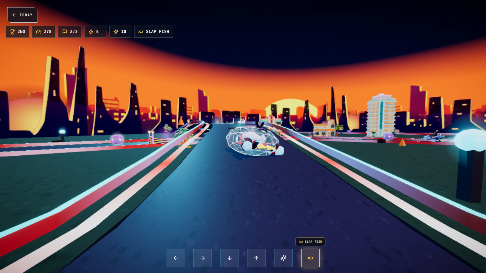
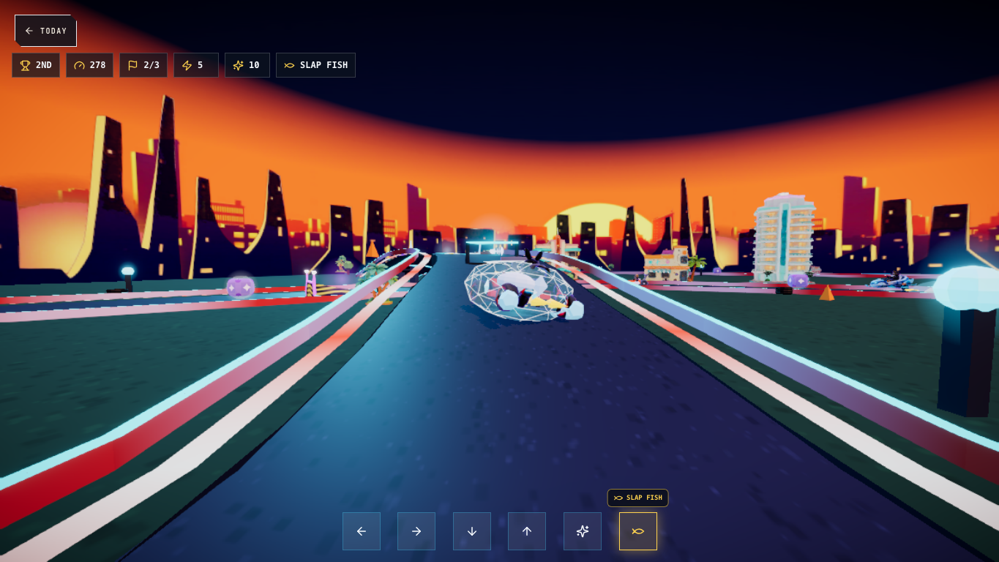
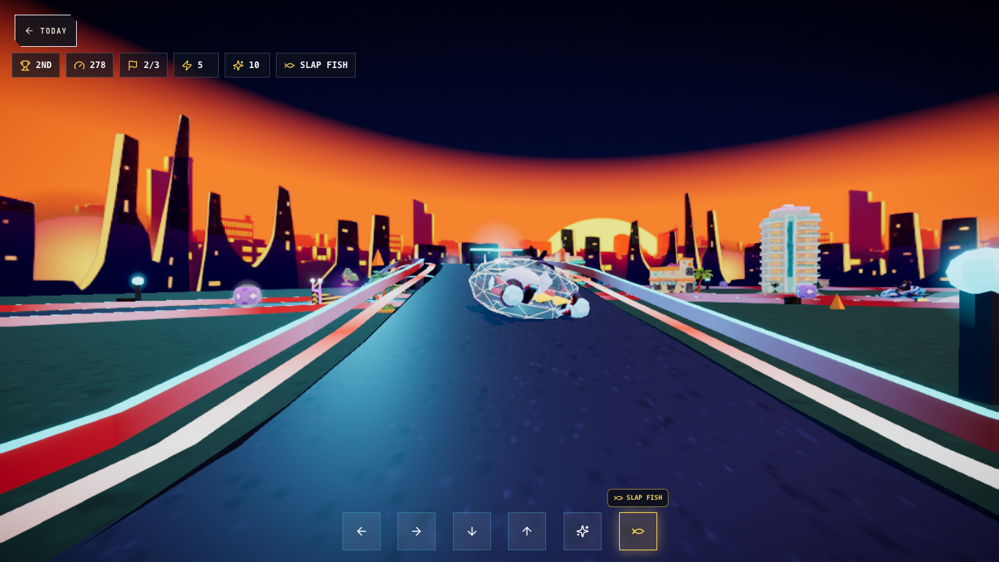
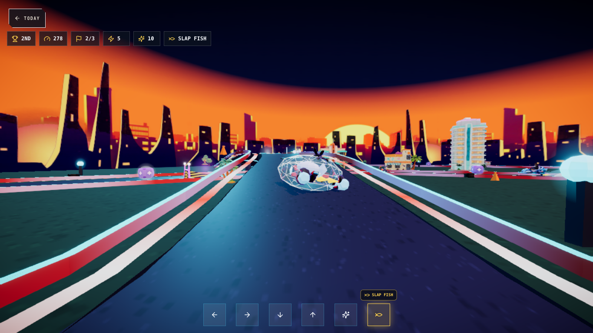
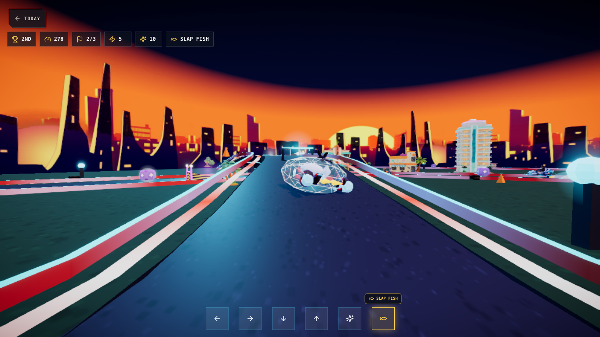
Camera caution for the pick: a higher/longer view changes the feel of EVERY corner,
not just pads — if a camera row wins, it goes through its own quick feel pass (drift framing, bridge
climb, underpass duck) before shipping. (regen: node tmp/w2-boost-lab/capture-cam-pad-matrix.mjs)